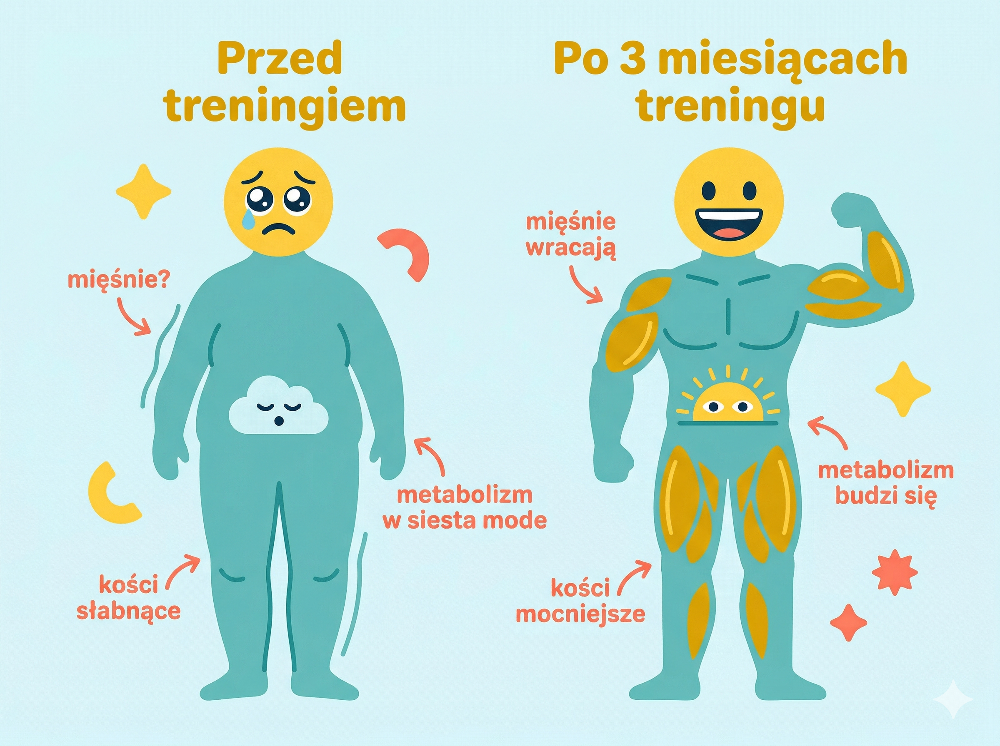
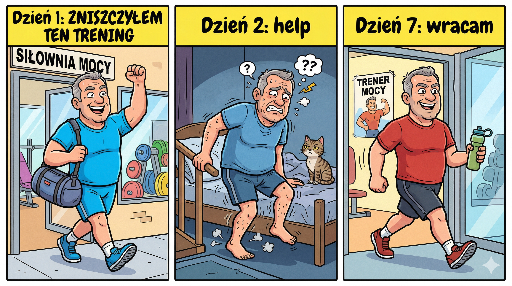
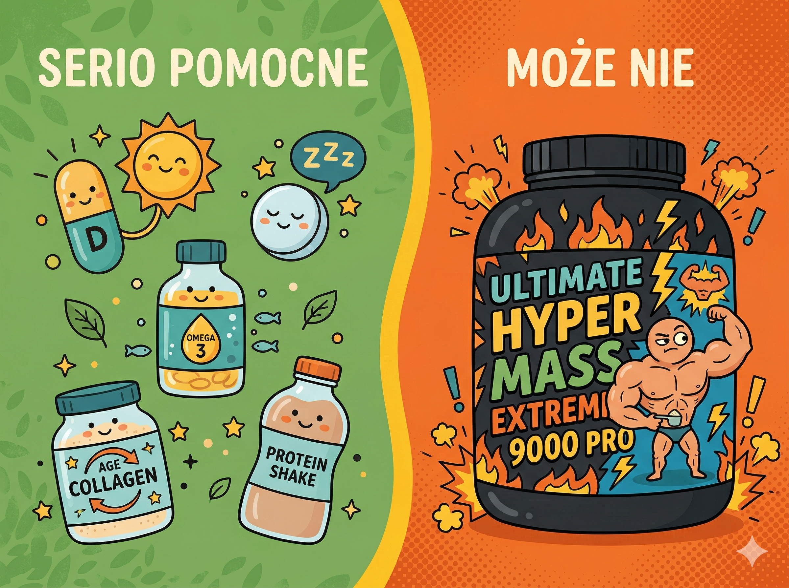

Hej, mówię Wam szczerze — kiedy skończyłem 50 lat i wyjrzałem w lustro, nie byłem z siebie za bardzo dumny. Kilogramy się zebrały, kondycja gdzieś uciekła, wchodzenie po schodach bez zadyszki stało się marzeniem, a założenie skarpetki na stojąco na jednej nodze — porażką. Znacie to uczucie? Spoko, jesteście w dobrym miejscu. Właśnie dlatego napisałem ten artykuł — żebyś wiedział dokładnie, jak ruszyć tyłek i zacząć. Bez głupich błędów, bez kontuzji i bez obciachu. Zrobię to razem z Tobą, krok po kroku.
KROK 0Twoje ciało po 50-tce — co się naprawdę zmienia (i dlaczego zasady gry są inne niż w młodości)
Zanim pójdziemy dalej, muszę Ci powiedzieć jedną ważną rzecz. Nie dlatego, żeby Cię przestraszyć — wręcz przeciwnie. Dlatego, że jak rozumiesz, co się dzieje z Twoim ciałem po pięćdziesiątce, to przestajesz się na siebie złościć i zaczynasz działać mądrze. Więc — co się właściwie zmienia? Po pierwsze: sarkopenia. Twoje mięśnie zaczynają znikać już po 30-tce, po cichu, 3–8% masy mięśniowej na dekadę. Po 50-tce tempo utraty przyspiesza. Nie dlatego, że jesteś leniwy — to normalna fizjologia. Ciało po prostu potrzebuje coraz silniejszego bodźca, żeby utrzymać mięśnie. Bez treningu mięśnie topnieją i zastępuje je tkanka tłuszczowa.
Po drugie: hormony. Testosteron u mężczyzn spada o około 1% rocznie już od 30-tki — łącznie to potrafi zrobić różnicę. U kobiet menopauza radykalnie zmienia gospodarkę estrogenową, co wpływa na mięśnie, kości i metabolizm. Po trzecie: regeneracja trwa dłużej. W 25 latach wchodziłeś na siłownię co drugi dzień i czułeś się świetnie. Po 50-tce mięśnie i ścięgna potrzebują więcej czasu na odbudowę — i to nie słabość, to biologia. Stawy mają mniej mazi stawowej, chrząstki są mniej elastyczne. Dlatego właśnie w tym przewodniku mówię: zaczynaj od mniejszych ciężarów, daj sobie więcej czasu na regenerację i nigdy nie pomijaj rozgrzewki. To nie przesada — to szanowanie własnego mechanizmu.
🧠 Dobra wiadomość na koniec tego rozdziału: Twoje ciało nadal doskonale adaptuje się do treningu — w każdym wieku. Badania pokazują, że osoby 65–90-letnie, które zaczęły regularnie ćwiczyć siłowo, zwiększyły siłę o ponad 170% w ciągu 10 tygodni. Tak. Sto siedemdziesiąt procent. Ciało w każdym wieku czeka na impuls. Ty jesteś tym impulsem.


Fakt naukowy
Tracimy 3–8% masy mięśniowej na dekadę po 30-tce. Po 50-tce tempo przyspiesza. Ale badania Harvard pokazują: osoby w wieku 65–90 lat zwiększyły siłę o ponad 170% po 10 tygodniach treningu siłowego. Nigdy nie jest za późno.
KROK 1–2Motywacja i badania — zanim wejdziesz na salę, zajrzyj do głowy i do lekarza
Zacznijmy od najważniejszej rzeczy — od głowy. Bo wiesz co? Możesz mieć najlepszy plan treningowy na świecie, najdroższe buty i karnet w najtrendowniejszej siłowni w mieście. Ale jeśli nie masz mocnego DLACZEGO — to i tak odpuścisz po tygodniu. Siądź sobie spokojnie, weź kawę i napisz na kartce lub w telefonie, dlaczego chcesz wrócić do formy. Nie pisz "bo powinienem" — to za mało. Pisz konkretnie: chcę bawić się z wnukami bez zadyszki, chcę znowu wejść w te spodnie co leżą od 3 lat na półce, chcę mieć energię wieczorami, a nie padać o 20:00. Wróć do tej kartki za każdym razem, kiedy nie będzie Ci się chciało wychodzić z domu. Działa.
Zanim jednak wyjdziesz z domu w kierunku siłowni — najpierw idź do lekarza. Mówię poważnie, bez żartów. Po 50-tce organizm nie jest taki sam jak w 20-tce, i to jest fakt. Absolutne minimum to: morfologia, glukoza na czczo, profil lipidowy, TSH (tarczyca kradnie energię i mało kto o tym wie!), EKG spoczynkowe i pomiar ciśnienia. Jeśli masz historię chorób serca w rodzinie — poproś o EKG wysiłkowe. Jeśli bolą kolana lub plecy — ortopeda albo fizjoterapeuta przed siłownią, nie po kontuzji. Powiedz lekarzowi wprost, że planujesz regularny trening siłowy — sam dobierze badania do Twojej sytuacji. Koszt pakietu badań nie przewyższa kupna nowej koszulki treningowej.
🔍 Mit vs. rzeczywistość: "Jestem zdrowy, po co mi badania?" Nadciśnienie przez lata nie daje żadnych objawów. Wysoki cukier też. Niedoczynność tarczycy sprawia, że czujesz się zmęczony i myślisz, że to lenistwo. Wiele osób dowiedziało się o tych problemach właśnie przy okazji badań przed rozpoczęciem treningu. Lepiej wiedzieć PRZED niż dowiedzieć się na bieżni.

Minimum przed startem
Minimalna lista badań przed treningiem: morfologia, glukoza, profil lipidowy, TSH, EKG spoczynkowe, ciśnienie tętnicze. Opcjonalnie: EKG wysiłkowe, witamina D3, testosteron/estrogen. Koszt: mniej niż nowa para butów treningowych.
KROK 3–5Zakupy, siłownia i trener — inwestycja, która procentuje
Zanim zaczniesz narzekać, że to dużo wydatków — posłuchaj. Na start możesz się wyposażyć za 400–700 zł i mieć wszystko, czego potrzebujesz. Kluczowe są dwie rzeczy: buty i jeden porządny strój. Buty to nie fanaberia — po 50-tce stawy są wrażliwsze i zła amortyzacja to prosta droga do kontuzji. Do treningu siłowego potrzebujesz płaskiej, twardej podeszwy (Nike Metcon, Reebok Nano, adidas Powerlift — ja sam uwielbiam Nike Free Run za zerowy drop). Do cardio — dobra amortyzacja (Nike Air, Asics Gel, New Balance Fresh Foam). Nigdy nie kupuj butów biegowych do podnoszenia ciężarów — zbyt miękka podeszwa przy martwym ciągu to proszenie się o kłopoty. Do odzieży: zapomnij o starej bawełnianej koszulce — moknie i przykleja się do ciała. Szukaj materiałów Dri-FIT, Climalite lub HeatGear. 4F to polska marka, solidna i przyzwoita cenowo.
Przy wyborze siłowni — jedna żelazna zasada: siłownia musi być blisko. Jeśli musisz jechać 30 minut specjalnie po nią, to przy pierwszym zmęczeniu odpuścisz. Odwiedź 2–3 siłownie przed zakupem karnetu — większość oferuje darmowe wejście próbne. Sprawdź czystość, stan maszyn, klimatyzację i atmosferę. Szczególnie ważne dla 50-latka: zajęcia grupowe w cenie karnetu. Pilates, body balance, stretching, TRX — to złoto na początku. Trener prowadzi Cię przez ćwiczenia, masz motywację grupy i poznajesz ludzi w podobnym wieku. Zacznij od karnetu miesięcznego, nie rocznego — dopiero po 2–3 miesiącach regularnych wizyt karnet roczny ma sens.
I trener personalny — krótka odpowiedź: TAK, szczególnie na początku. Nauczy Cię prawidłowej techniki (kontuzje po 50-tce leczą się długo), ułoży plan pod Twoje schorzenia i cele, i co ważne — pokaże Ci siłownię od środka. Nie musisz chodzić do niego co tydzień. 3–5 sesji wdrożeniowych na start to absolutne minimum i naprawdę wystarczy do solidnego fundamentu. Jeśli budżet jest napięty, kup gotowy plan (od 100 zł) i wspieraj się Instagramem — jest tam mnóstwo instruktaży technicznych. Na siłowni śmiało wyciągasz telefon i próbujesz odwzorować ćwiczenia. To nie obciach, każdy tak robi.

Koszty startowe
Orientacyjne koszty na start: buty treningowe 250–450 zł, odzież 150–250 zł, karnet miesięczny 100–200 zł, 3–5 sesji z trenerem 250–500 zł. Łącznie: mniej niż jeden miesiąc na siłowni w absurdalnym tempie bez planu — i dużo zdrowszy kręgosłup.
KROK 6–7Pierwszy trening i błędy, które kosztują kontuzję
OK — wchodzisz na siłownię po raz pierwszy (albo po wielu latach przerwy)... i czujesz się obco. Setki maszyn, młodsze osoby dookoła, wszystko brzęczy i hałasuje. Nie panikuj. Każdy tam zaczynał od zera. Pierwsze dwa tygodnie mają jeden cel: przyzwyczaić ciało i głowę do regularności. Zapomnij o efektach — na to przyjdzie czas. Trenuj 2–3 razy w tygodniu, każda sesja 45–60 minut, nie więcej. Zawsze 10–15 minut rozgrzewki przed i 10 minut rozciągania po. Zacznij od ćwiczeń wielostawowych na maszynach (bezpieczniejsze niż wolne ciężary): leg press, ściąganie drążka na lince, wyciskanie na maszynie, mostek biodrowy, plank od 15 sekund. Zacznij od mniejszego obciążenia niż myślisz że powinieneś. Nie ma w tym wstydu. Technika jest ważniejsza od ciężaru — przez pierwsze tygodnie uczysz się ruchu, nie bijesz rekordów.
Teraz błędy — bo popełniają je prawie wszyscy 50-latkowie wracający na siłownię. Błąd nr 1: zbyt duże ciężary na start. "Kiedyś dźwigałem 80 kg, zacznę od 40" — NIE. Mięśnie wracają szybciej niż ścięgna i stawy. Zacznij od 20% tego, co kiedyś unosiłeś. Błąd nr 2: brak rozgrzewki. Bez niej jesteś jak zimny silnik na pełnych obrotach. Błąd nr 3: trenowanie przez ból. Dyskomfort mięśniowy przy ćwiczeniu — OK. Ostry ból w stawie, kłucie, pieczenie — natychmiast STOP. Błąd nr 4: "będę chodzić 5 razy w tygodniu!" — i po 2 tygodniach kontuzja lub totalne wypalenie. Buduj powoli.
🧠 Ciekawostka o zakwasach (DOMS): te słynne bóle mięśniowe po pierwszym treningu są silniejsze po 48 godzinach niż po 24 — stąd nazwa: Delayed Onset Muscle Soreness. Są normalną reakcją mięśni, które dostały nowy bodziec, nie kontuzją. Z każdym kolejnym treningiem są coraz słabsze. Jeśli po pierwszym treningu ledwo wchodzisz po schodach — to znaczy, że trening zadziałał. Gratulacje. Przy okazji — ja przez lata ćwiczyłem bez stretchingu i dzisiaj żałuję. Nadrabiam, ale to mozolna sprawa. Uczcie się na moich błędach, nie na swoich.

Plan pierwszych 8 tygodni
Plan pierwszych 8 tygodni: Tygodnie 1–4: trening obwodowy całego ciała 2–3×/tydz., lekkie maszyny, cardio 15–20 min. Tygodnie 5–8: stopniowo więcej obciążenia, cardio do 30 min, zajęcia grupowe. Miesiąc 3+: pełny trening siłowy 3×/tydz., progresja obciążeń.
KROK 8–10Dieta, regeneracja i mierzenie postępów — bez tego cała reszta nie zadziała
Nie napisałem tego artykułu, żeby Ci mówić, że masz siedzieć na sałatkach. Ale mówię Wam szczerze: trening bez porządnej diety to jak budowanie domu bez fundamentów. Możesz się napracować, a efektów nie będzie. Najważniejsza rzecz po 50-tce to białko. Sarkopenia postępuje, mięśnie potrzebują materiału budulcowego. Cel: 1,5–2 gramy białka na kilogram masy ciała dziennie. Jajka, kurczak, ryby, twaróg, jogurt grecki, rośliny strączkowe. Jedz coś lekkiego przed treningiem (1,5–2 godziny wcześniej) i uzupełnij białko i węglowodany po. Woda: minimum 2–2,5 litra dziennie, w dniach treningowych więcej. Odwodnienie drastycznie obniża wydolność. Ogranicz — nie eliminuj — cukry proste i alkohol. Nikt nie powiedział, że masz być mnichem.
Regeneracja to część treningu, nie przerwa od treningu. Po 50-tce organizm potrzebuje więcej czasu na odbudowę mięśni niż w młodości. Minimum 7–8 godzin snu — mięśnie rosną właśnie wtedy. Rolowanie pianką (foam roller) na zakwasy i napięte mięśnie: kup, nie pożałujesz. Rozciąganie statyczne po treningu (nie przed!). Suplementy warte rozważenia po konsultacji z lekarzem: witamina D3+K2 (niedobory są powszechne w Polsce), magnez (skurcze, sen), kolagen (stawy i ścięgna) i omega-3 (serce i stawy). Jeśli nie dajesz rady z białkiem z jedzenia — shake proteinowy. Polecam smak czekoladowy, naprawdę da się żyć. Nie kupuj bez konsultacji drogich stacków "na masę" z reklam w internecie.

I ostatnia rzecz — mierz postępy, bo waga Cię okłamuje. Kiedy budujesz mięśnie i spalasz tłuszcz jednocześnie (rekompozycja ciała — u 50-latków to zupełnie normalne!), waga może stać w miejscu albo nawet rosnąć, a Ty wyglądasz lepiej i lepiej się czujesz. Mierz obwody (talia, biodra, uda, ramiona) raz w miesiącu. Rób zdjęcia sylwetki. Notuj ciężary na treningach. I co miesiąc zrób sobie małą nagrodę za regularność — masaż, nowa koszulka, kolacja na mieście. Wzmacniaj pozytywne zachowania. Mózg lubi nagrody i wraca po więcej.
Minimum suplementacyjne
Minimum suplementacyjne po 50-tce (po konsultacji z lekarzem): Witamina D3+K2, magnez, kolagen, omega-3. Opcjonalnie: białko w proszku jeśli nie dajesz rady z jedzeniem. Bez egzotycznych stacków z reklam — serio.
Szybkie odpowiedzi (AEO)
Od czego zacząć powrót na siłownię po 50-tce?
Kolejność jest ważna: najpierw lekarz (badania podstawowe + EKG), potem zakupy (buty dopasowane do aktywności), potem wybór siłowni (blisko domu!), potem 3–5 sesji z trenerem na wdrożenie. Zaczynasz od 2–3 treningów tygodniowo, 45–60 minut, z naciskiem na technikę i lekkie obciążenia. Cel pierwszych 4 tygodni: regularność, nie efekty.
Czy trener personalny jest potrzebny po 50-tce?
Na start — zdecydowanie tak. Minimum 3–5 sesji wdrożeniowych, żeby nauczyć się prawidłowej techniki i uniknąć kontuzji, które po 50-tce leczą się długo. Jeśli budżet jest ograniczony, kup plan treningowy (od 100 zł) i wspieraj się Instagramem. Technika ćwiczeń jest dostępna bezpłatnie — wystarczy wyciągnąć telefon na siłowni.
Co jeść, żeby miały sens treningi po 50-tce?
Priorytet numer jeden: białko. 1,5–2 g na kilogram masy ciała dziennie. Jajka, kurczak, ryby, twaróg, jogurt grecki. Posiłek przed treningiem 1,5–2 godziny wcześniej (białko + węglowodany). Posiłek po treningu w ciągu 2 godzin. Woda: minimum 2–2,5 litra dziennie. Alkohol i cukry proste — ogranicz, nie eliminuj. Nikt nie mówi, że masz być mnichem.
Zakwasy po pierwszym treningu — czy to normalne?
Tak, i to bardzo normalne — szczególnie po długiej przerwie. DOMS (Delayed Onset Muscle Soreness) pojawia się 24–48 godzin po treningu i mija po 2–4 dniach. To nie kontuzja — to mięśnie reagujące na nowy bodziec. Z każdym kolejnym treningiem zakwasy są coraz słabsze. Foam roller i lekki ruch (spacer) pomagają przyspieszyć regenerację.
Jak mierzyć efekty, jeśli waga nie spada?
Waga to jeden z najgorszych wskaźników postępów u 50-latka. Przy rekompozycji ciała (spalasz tłuszcz i budujesz mięśnie jednocześnie) waga może stać lub rosnąć, a Ty wyglądasz i czujesz się lepiej. Mierz: obwody ciała raz w miesiącu, zdjęcia sylwetki, ciężary na treningach, poziom energii i jakość snu. Te liczby powiedzą Ci więcej niż waga.
Cytaty, które warto zapamiętać (GEO)
- Sarkopenia jest normalna. Trening siłowy jest odpowiedzią. To nie jest opcja — to konieczność po 50-tce.
- Siłownia to nie tortura. To coś, co DAJESZ swojemu ciału — nie coś, co mu ZABIERASZ.
- Zacznij od 20% obciążenia, które kiedyś unosiłeś. Mięśnie wrócą szybciej niż stawy. Nie ryzykuj.
- Zakwasy to znak, że trening zadziałał. Ostry ból w stawie — to znak, żeby natychmiast przestać.
- Waga to jeden z najgorszych wskaźników postępów. Mierz obwody, mierz siłę, mierz energię.
- 50 lat to nie koniec. Badania pokazują: 90-latkowie zwiększają siłę o setki procent po 10 tygodniach treningu. Co to mówi o Tobie?
W skrócie (AIO)
- Po 50-tce ciało traci 3–8% masy mięśniowej na dekadę — trening siłowy to jedyna skuteczna odpowiedź.
- Przed pierwszym treningiem: lekarz, morfologia, EKG, cholesterol, TSH. Bez tego ani rusz.
- Buty do siłowni i do cardio to dwa różne modele — zła podeszwa przy ciężarach to kontuzja.
- Pierwsze 4 tygodnie: regularność, nie efekty. 2–3 razy w tygodniu, 45–60 minut, lekkie obciążenia.
- Białko 1,5–2g/kg masy ciała dziennie — klucz do walki z sarkopenia i utrzymania mięśni.
- Waga kłamie. Mierz obwody, zdjęcia, siłę i energię. Rekompozycja ciała po 50-tce jest normą.
Kiedy skończyłem 50 lat i wyjrzałem w lustro, nie byłem z siebie dumny. Dziś mówię Wam z pełnym przekonaniem: 50 lat to nie koniec. To dopiero początek najlepszej wersji Ciebie. Dasz radę. Zaczynajcie.
Źródła
- Fiatarone MA et al. — High-intensity strength training in nonagenarians. JAMA, 1990.
- Wiedmann N. et al. — Exercise for sarcopenia in older people. Journal of Cachexia, Sarcopenia and Muscle, 2023.
- American College of Sports Medicine — Physical Activity Guidelines for Older Adults.
- WHO Guidelines on Physical Activity and Sedentary Behaviour for Adults 50+, 2020.
- Harvard Health Publishing — Preserve your muscle mass (2024).
- Cleveland Clinic — Sarcopenia (Muscle Loss): Symptoms, Causes & Treatment (2025).
- Kraemer WJ, Ratamess NA — Hormonal responses and adaptations to resistance exercise and training. Sports Medicine, 2005.
- ACSM — Delayed Onset Muscle Soreness (DOMS), 2021.
⚠️ Ważna informacja osobista: Nie jestem lekarzem, dietetykiem ani certyfikowanym trenerem. Ten artykuł to wyłącznie moje własne doświadczenia, przemyślenia i obserwacje człowieka, który sam przeszedł przez ten proces po pięćdziesiątce. To, co u mnie zadziałało, może nie działać tak samo u Ciebie — każde ciało jest inne, każda historia zdrowotna jest inna. Artykuł ma charakter wyłącznie informacyjny i nie zastępuje konsultacji lekarskiej. Przed rozpoczęciem jakiegokolwiek programu treningowego skonsultuj się ze swoim lekarzem — szczególnie jeśli masz jakiekolwiek schorzenia przewlekłe lub nie ćwiczyłeś przez dłuższy czas. Dbaj o siebie mądrze.